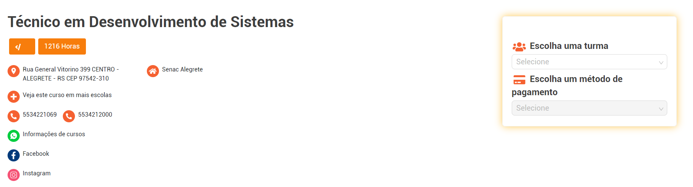

Você busca uma oportunidade de inserção no mercado de trabalho? A área de Desenvolvimento de Sistemas fascina
você? Gostaria de agregar conhecimentos fundamentais para os mais diversos segmentos profissionais? Se as
respostas forem sim, o curso Técnico em Desenvolvimento de Sistemas do Senac-RS foi feito para você!
A formação vai te preparar para construir sistemas computacionais utilizando ambiente de desenvolvimento,
seguindo as normas e especificações da lógica e das linguagens de programação bem como a modelagem,
implementação e manutenção do banco de dados. Executa o desenvolvimento a manutenção e testes de programas de
computador documentando o processo, adotando normas técnicas, de qualidade, de saúde, de segurança do trabalho e
preservação ambiental no desempenho de sua função. Você terá o aprendizado da habilidade de comunicação em
língua inglesa ao longo do curso.
Por meio de uma proposta pedagógica adequada às exigências do mundo profissional, o curso oferece nos momentos
presenciais uma aprendizagem pautada por metodologias que propiciam atuação por projetos, aulas práticas,
teóricas, vivenciais e flexíveis com foco no mercado de trabalho.
Ao final da formação você estará apto a atuar em empresas de diversos segmentos, além de poder participar de
concursos em organizações públicas.
Gostou da ideia de ser um profissional completo da área de Desenvolvimento de Sistemas? Venha para o curso
Técnico em Desenvolvimento de Sistemas - Bilíngue e mude de vida.
Cronograma
-
Planejar o desenvolvimento de software;
-
Desenvolver algoritmos;
-
Planejar e administrar banco de dados;
-
Desenvolver código orientado a objetos;
-
Analisar orientações técnicas;
-
Elaborar orientações técnicas;
-
Desenvolver e organizar interface gráfica para aplicações desktop;
-
Programar aplicativos computacionais com integração de banco de dados para desktop;
-
Gerenciar a configuração e versionamento de Software;
-
Executar testes e realizar melhorias em aplicativos computacionais Desktop;
-
Desenvolver e organizar interface de usuário e elementos visuais para aplicações web. (front-end);
-
Programar aplicativos computacionais com integração de banco de dados para web. (back-end);
-
Publicar e testar aplicações Web;
-
Desenvolver e organizar interface gráfica para dispositivos móveis;
-
Desenvolver interface para melhor experiência do usuário;
-
Projeto Integrador Assistente de Administração de Banco de Dados;
-
Projeto Integrador Assistente de desenvolvimento de sistemas Full Stack.